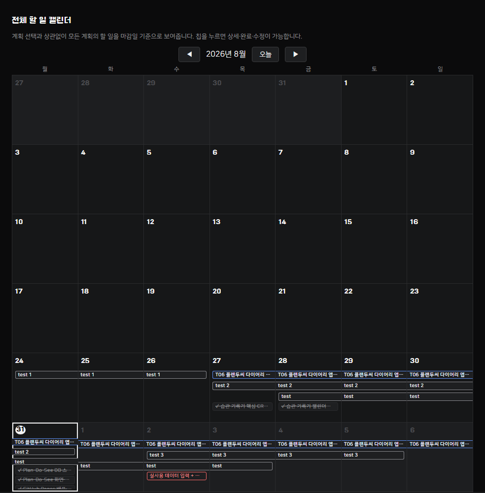
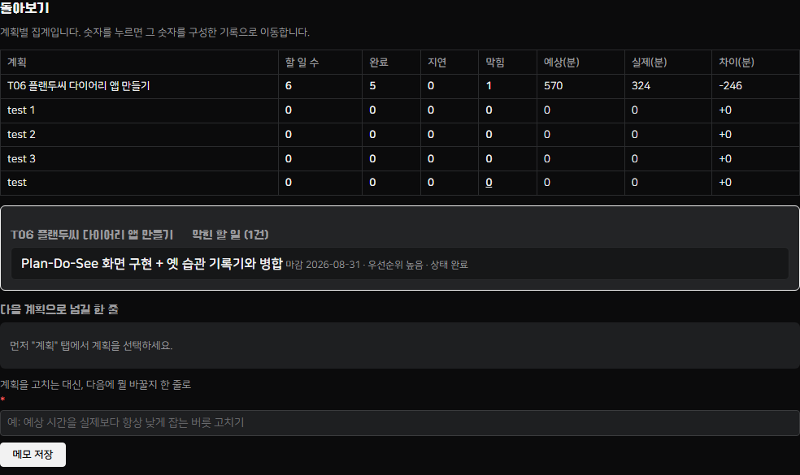

실사용 화면 (실제 데이터)
"T06 플랜두씨 다이어리 앱 만들기" — 이 앱을 만드는 실제 작업 자체를 계획으로 등록했다. 할 일 6개(5개 완료), 실행 기록 5개를 실제 git 커밋 이력의 작업 시각을 근거로 입력했다.



계획(Plan) → 실제로 한 일(Do) → 돌아보기(See)가 하나로 이어지는 다이어리. 로그인은 없고, 자료는 Supabase(Postgres) 서버 데이터베이스에 저장한다. 2026-08-31에 과제 요구사항이 옛 습관 기록기(카드1~5, localStorage)에서 이 내용으로 바뀌었다 — 옛 기록기는 지우지 않고 화면 위 모드 전환으로 그대로 유지했다. 원본 요구사항은 ASSINGMENT.md, 작업 이력·설계 결정은 PROGRESS.md에 있다.
https://whiteclover0542.github.io/plan_record/
로그인 없이 열리고, 기본 화면이 "계획 다이어리 (Plan·Do·See)" 모드다.
https://github.com/whiteclover0542/plan_record
공개(Public) 저장소, 로그인 없이 열린다.
"T06 플랜두씨 다이어리 앱 만들기" — 이 앱을 만드는 실제 작업 자체를 계획으로 등록했다. 할 일 6개(5개 완료), 실행 기록 5개를 실제 git 커밋 이력의 작업 시각을 근거로 입력했다.


어디로 가나요
https://whiteclover0542.github.io/plan_record/
세 단계 안에 무엇을 하나요
무엇이 보이면 통과인가요
안 될 때는 무엇이 보이나요